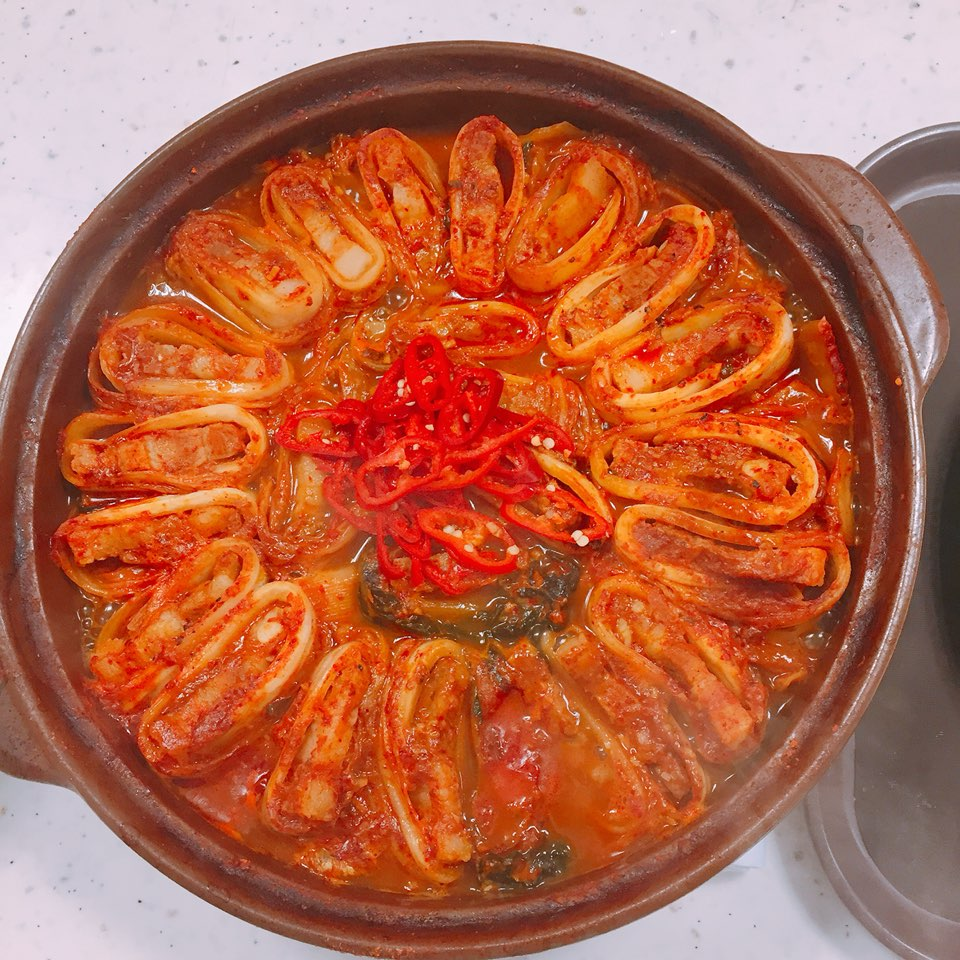

Korean Food Menu List
삼겹살 김치 찌개

재료 : 김치 200g, 삼겹살 150g, 양파 1/2개, 파 1뿌리, 청양고추 1개,
두부 1/2모, 식용유 1T, 간장 2T, 맛술 1T, 고춧가루 1.5T, 다진 마늘 1T, 물 600mL
①먼저 파는 세로방향으로 크기에 따라 2~4등분 해 주신 다음 4cm 간격으로 잘라 준비할게요. 저는 파란 부분을 송송 썰어서 고명용으로 조금 준비했습니다. 양파는 0.7cm 간격으로 슬라이스해 주시고 청양고추 역시 같은 두께로 송송 썰어 준비해 주세요. 너무 매운맛을 원하지 않으신다면 고추 넣는 것은 생략해 주셔도 괜찮습니다.
②냄비를 강불에서 3분 예열 후 중불로 낮추고 식용유 한 큰 술을 두른 다음 파와 양파를 5분간 충분히 볶아 단맛을 내 주세요. 김치의 신맛을 줄여주고 풍미를 더해주는 역할을 한답니다.
③이제 간장 2T, 맛술 1T, 고춧가루 1.5T 이렇게 양념재료를 넣고 5분간 더 볶아주세요. 풍미는 더하고 고춧가루의 텁텁함을 날리는 작업이라고 생각해 주시면 좋을 것 같아요. 밑이 타기 쉬우니 잘 저어가면서 볶아주세요.
④이제 물 600mL를 넣고 묵은 김치 200g 정도를 넣어주세요. 넉넉한 한줌 정도의 양이며 이때 꼭 김칫 국물도 함께 넣어 주셔야 깊은 감칠맛이 우러난답니다. 6 큰 술 정도의 국물을 넣어주시고 한소끔 끓여주세요. 김치의 아삭함이 사라지고 반투명해질 때까지 10분 정도 중불에서 충분히 끓여주세요.
⑤이제 삼겹살과 청양고추, 두부, 다진 마늘을 넣고 한 번 더 우르르 끓여주세요
⑥넉넉하게 담아 송송 썬 파를 곁들여 주시면 얼큰함과 깊은 풍미까지 살린 김치찌개 맛있게 끓이는법 완성입니다.
Mascot